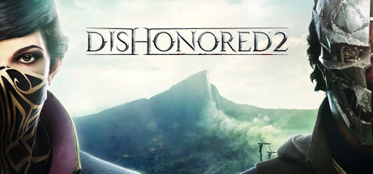

Dishonored 2 promete corregir "en los próximos días" sus problemas de rendimiento en PC
Bethesda adelante que un nuevo parche ofrecerá una tasa de imágenes por segundo más estable..
El lanzamiento de Dishonored 2 en PC ha estado acompañado de serios problemas de rendimiento que Bethesda promete corregir "en los próximos días" con una actualización que, entre otras novedades, "proveerá mejoras que permitirán una tasa de refresco más consistente en los sistemas afectados".
La exigencia técnica del videojuego de Arkane Studios, que funciona renqueante incluso en equipos que superan los requisitos mínimos del sistema, ha generado malestar entre los aficionados, que también se quejan de un efecto parpadeo en la pantalla y ciertos elementos del escenario, así como popping en algunas texturas.
Otro de los problemas tiene que ver con el sistema de control, y en relación a este Bethesda promete también cambios: "vamos a actualizar el código para que el ratón tenga una respuesta más fluida"..